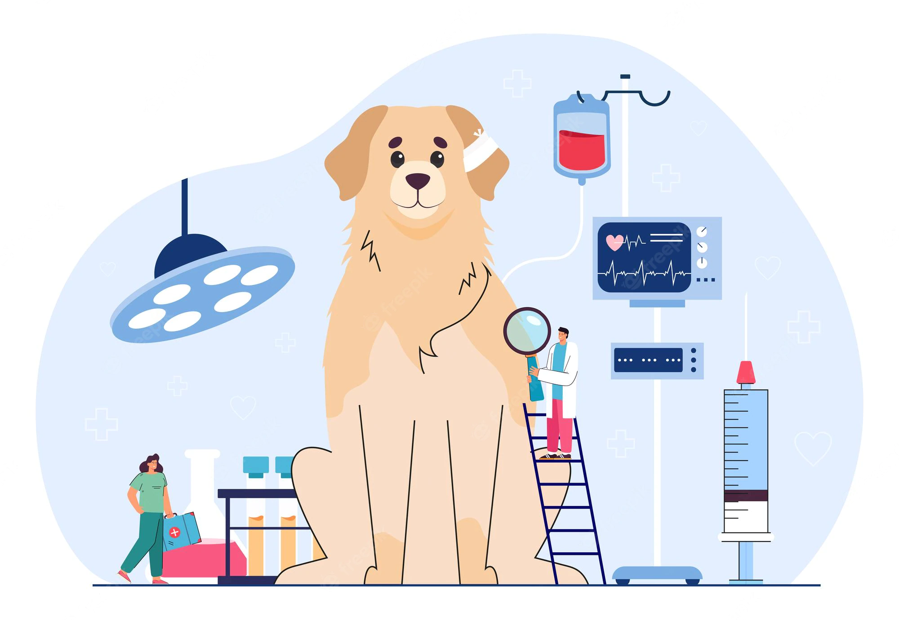

 Servicios Médicos Urgencias Consulta Externa Cirugia General y Ortopedica Hospitalización Radiología y Ecografía Laboratorio Farmacia Veterinaria
Especialidades Oftalmología Oncología Neurología Dermatología Medicina de Felinos Patología Odontología